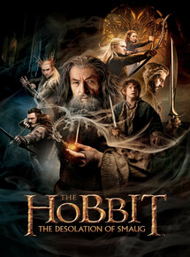

Diretor: Peter Jackson.
Elenco: Martin Freeman, Richard Armitage, Benedict Cumberbatch.
Gênero: Fantasia/Aventura.
Censura: 12 anos.
Tempo de duração: 3h 7m.
Sinopse: Ao lado de um grupo de anões e de Gandalf, Bilbo segue em direção à Montanha Solitária, onde deverá ajudar seus companheiros a retomar a Pedra de Arken. O problema é que o artefato está perdido em meio a um tesouro protegido pelo temido dragão Smaug.